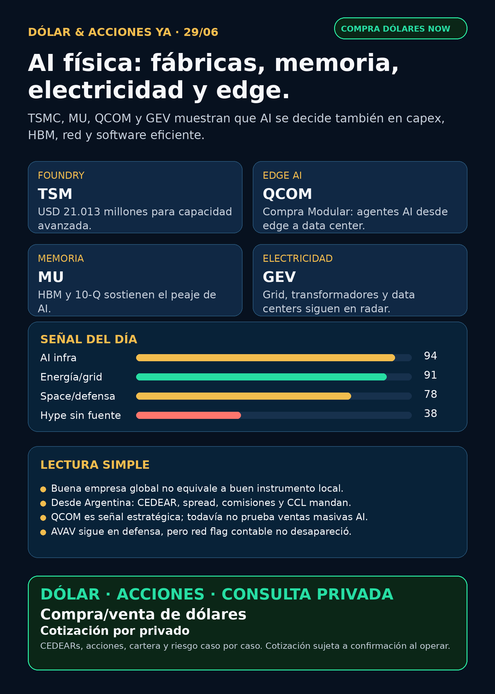

AI física: fábricas, memoria, electricidad y edge.
Reporte educativo para Argentina: qué señales mirar, qué riesgos no comprar con los ojos cerrados y qué instrumento falta verificar antes de operar.
Texto WhatsApp
Placa del día

Dólar & Acciones YA — 29/06
Lectura simple del día
Hoy no apareció un “mega titular” aislado, pero sí una confirmación importante: la inteligencia artificial sigue bajando al mundo físico. TSMC aprobó USD 21.013 millones para capacidad avanzada; Micron confirmó en 10-Q números fuertes ligados a memoria/HBM; GE Vernova sigue como proxy claro de electrificación para data centers; y Qualcomm compró Modular para reforzar software de AI generativa/agéntica desde edge hasta data centers.
En criollo: AI no es sólo una app o un chatbot. Para que corra hacen falta fábricas de chips, memoria rápida, electricidad, transformadores, cooling, software de inferencia, deuda y capex. Y para Argentina hay una segunda pregunta: aunque la tesis global sea buena, ¿existe instrumento local, CEDEAR, liquidez, spread razonable y CCL implícito aceptable?
Esto es research educativo. No es orden de compra ni venta.
Tesis central
La tesis de hoy es: la AI se está comiendo el mundo físico.
- TSMC muestra que el cuello de botella foundry sigue exigiendo inversión pesada.
- Micron confirma que HBM/memoria es peaje de AI, no accesorio.
- GE Vernova, transformadores, switchgear, power hardware y cooling siguen siendo el “segundo peaje”: electricidad física.
- Qualcomm intenta entrar al stack AI por software + edge + data center, no sólo por teléfonos.
- SpaceX/SPCX y Rocket Lab mantienen vivo el carril space/orbital infrastructure.
- Defensa/aeroespacial fue revisado: RKLB suma ejecución; AVAV mejora governance pero conserva red flag contable previo.
Señales educativas del día — no ranking de compra
1) TSM / Taiwan Semiconductor — foundry y capex físico
- Señal: SEC 6-K del 25/06/2026: el board aprobó capital appropriations por USD 21.013 millones para maquinaria/equipamiento de advanced technology capacity and others.
- Fuente: https://www.sec.gov/Archives/edgar/data/1046179/000104617926000377/tsm-monthend6kx20260625.htm
- Lectura: si el mundo quiere más AI, alguien tiene que fabricar más capacidad avanzada. TSMC sigue siendo uno de los cuellos de botella físicos.
- Accionable internacional/global: ticker
TSMen mercado global; candidato de seguimiento para análisis humano. - Accionable local Argentina: verificar CEDEAR/disponibilidad, liquidez, spread, comisiones y CCL antes de hablar de ejecución.
- Riesgo: geopolítica Taiwán/China, ciclo de semis, valuación y capex enorme.
2) QCOM / Qualcomm — nuevo radar AI edge-to-cloud
- Señal: Qualcomm anunció acuerdo para adquirir Modular Inc., presentada como plataforma AI-native para generative y agentic AI “from edge to cloud”, con foco en data center y edge environments. Cierre esperado en H2 2026 sujeto a condiciones/reguladores.
- Fuente: https://investor.qualcomm.com/news-events/press-releases/news-details/2026/Qualcomm-to-Acquire-Modular/default.aspx
- Lectura: QCOM intenta pasar de “chip móvil” a una capa más amplia de AI: software, inferencia eficiente, edge y data center. Es una señal estratégica, no prueba todavía de ventas masivas en AI data centers.
- Accionable internacional/global: seguimiento global.
- Accionable local Argentina: CEDEAR/acceso local a verificar.
- Riesgo: integración, ejecución, competencia contra NVIDIA/AMD/cloud stacks y que el mercado sobrerreaccione a la palabra “agentic”.
3) MU / Micron — memoria HBM como peaje de AI
- Señal: 10-Q confirma revenue trimestral de USD 41.456 millones y gross margin de USD 35.056 millones; HBM aparece como línea operacional crítica.
- Fuente: https://www.sec.gov/Archives/edgar/data/723125/000072312526000015/mu-20260528.htm
- Lectura: AI no compra sólo GPUs: compra memoria de alto ancho de banda. Si falta HBM, el stack no escala igual.
- Accionable internacional/global:
MUen seguimiento. - Accionable local Argentina: verificar CEDEAR/spread/liquidez.
- Riesgo: memoria es cíclica; márgenes y precios pueden girar fuerte.
4) GEV / GE Vernova — electricidad física para data centers
- Señal estructural vigente: Q1 2026 reportó USD 18.300 millones en orders, backlog +USD 13.000 millones secuencial y USD 2.400 millones de equipment orders de Electrification para data centers.
- Fuente: https://www.sec.gov/Archives/edgar/data/1996810/000199681026000063/gevpressrelease1q26.htm
- Lectura: si AI necesita data centers, los data centers necesitan red, equipos eléctricos, generación, transmisión y control.
- Accionable internacional/global: proxy público limpio del carril electrification/grid.
- Accionable local Argentina: CEDEAR/acceso local no verificado en este reporte.
- Riesgo: valuación, ejecución industrial, supply chain y timing de pedidos.
5) SPCX / SpaceX — space ya tiene huella SEC visible
- Señal: SEC 8-K: SpaceX cerró USD 25.000 millones de senior notes en tramos 2031, 2033, 2036, 2046 y 2056.
- Fuente: https://www.sec.gov/Archives/edgar/data/1181412/000162828026045763/spcx-closing8xkjune2026.htm
- Lectura: SpaceX ya no es sólo “empresa privada misteriosa” para el radar: hay eventos financieros SEC-visibles. Pero deuda, acción, bono, wrapper y fondo cerrado son instrumentos distintos.
- Accionable internacional/global: radar alto educativo; falta instrumento concreto, precio, liquidez, mercado, custodia e impuestos.
- Accionable local Argentina: no hay CEDEAR ni acceso local verificado. No presentarlo como compra fácil.
- Riesgo: FOMO y wrappers con premium/NAV opaco.
6) RKLB / Rocket Lab — ejecución institucional
- Señal: NASA seleccionó a Rocket Lab para tres misiones Electron: dos PolSIR y una TSIS-2.
- Fuente: https://www.globenewswire.com/news-release/2026/06/25/3317935/0/en/nasa-selects-rocket-lab-to-launch-sun-earth-sciences-missions.html
- Lectura: fortalece ejecución operativa en space/aerospace. No es AI pura ni reemplazo de SpaceX; es otro carril.
- Accionable internacional/global: seguimiento.
- Accionable local Argentina: instrumento local/liquidez a verificar.
7) HOOD / Robinhood — capital y governance
- Señal: cerró USD 2.200 millones de convertible senior notes 0,00% due 2029; luego designó a Dara Bazzano como principal accounting officer.
- Fuentes: https://www.sec.gov/Archives/edgar/data/1783879/000178387926000077/hood-20260622.htm y https://www.sec.gov/Archives/edgar/data/1783879/000178387926000083/hood-20260625.htm
- Lectura: combina narrativa de fintech/agentic trading con estructura de capital y controles. Una convertible puede dar caja, pero también potencial dilución.
- Accionable internacional/global: vigilar.
- Accionable local Argentina: CEDEAR/acceso local a verificar.
8) AVAV / AeroVironment — defensa con red flag
- Señal nueva: 8-K: nombró a William J. Lynn III como director clase I y redujo el board de diez a nueve miembros.
- Fuente: https://www.sec.gov/Archives/edgar/data/1368622/000110465926077575/tm2618946d1_8k.htm
- Lectura: governance suma, pero no borra el red flag contable/material weakness previo. En defensa no alcanza “drones + guerra”: hay que mirar contratos, backlog, integración, márgenes y controles.
- Accionable internacional/global: en radar, con cautela.
- Accionable local Argentina: acceso local a verificar.
Watchlist base — cobertura explícita
- RKLB: señal operativa vigente por NASA/PolSIR/TSIS-2. Estado: fortalece ejecución; no AI pura.
- NVDA: sin señal primaria nueva fuerte hoy; tesis fortalecida indirectamente por MU/HBM, TSM capex y energía/cooling.
- PLTR: sin señal nueva fuerte verificable 24–72h.
- TSM: señal nueva fuerte por capex de USD 21.013 millones.
- MU: 10-Q confirma tesis HBM/memoria.
- GOOGL/GOOG: sin señal directa nueva fuerte; sigue estructural por cloud/AI/TPU, pero no elevar claim nuevo.
- AAPL: sin señal fuerte nueva.
- HOOD: convertibles + principal accounting officer. Vigilar capital/dilución/controles.
- TSLA: autonomy/robotaxi revisado; sin fuente primaria nueva fuerte para elevar.
- ASML: moat EUV/High-NA estructural, sin evento fresco fuerte.
- Gold / GLD / GOLD / B: instrumento ambiguo. No hablar de precio/tesis hasta confirmar si es oro, ETF GLD, Barrick/GOLD u otra cosa.
- RVI: sin NAV/holdings fresco suficiente; tratar como fondo/instrumento cerrado, no operating company.
- CBRS: sigue radar alto por OpenAI MRA y concentración de Customer A; sin filing nuevo posterior al 10-Q.
- AVGO: sin señal primaria nueva fuerte hoy.
Energía, grid, transformadores y power hardware
Este carril queda arriba porque explica la AI para no financistas: el segundo peaje de AI es electricidad física.
- GEV / GE Vernova: proxy público más limpio para electrification/data-center power.
- Hitachi Energy / Hitachi (
6501.T,HTHIY): sigue en radar por power semiconductors y programa global de inversión ya indexado. - Siemens Energy (
ENR.DE): revisar como Siemens Energy, no confundir con Siemens AG. - HD Hyundai Electric (
267260.KS) y Hyosung HICO (298040.KS): radar alto por breakers, switchgear, transformadores y demanda AI data centers; acceso Argentina pendiente. - Virginia Transformer y Delta Star: privadas/no accionables directo; sirven para entender bottlenecks industriales.
- Argentina energía: YPF, Pampa Energía, TGS y Central Puerto revisadas. Sin señal nueva más fuerte que YPF/recompra de notes ya indexada. Mantener como capa educativa local.
Pharma / salud
- AZN / Truqap: señal previa vigente por FDA vía SEC 6-K; no fue titular nuevo hoy.
- LLY / orforglipron / “Foundayo”: aparecieron titulares secundarios, pero sin fuente primaria FDA/Lilly verificable. Estado: no publicar como aprobado.
- NVO / Wegovy oral: sin primaria nueva fuerte hoy; usar sólo con EMA/MHRA/Novo cuando corresponda.
- PFE / MRK / biotech M&A: revisado, sin señal primaria nueva más fuerte. No rellenar con notas de analistas.
Conclusión salud: carril cubierto; hoy el titular está en AI física, semis, energía y QCOM.
Defensa, guerra física y aerospace industrial
- AVAV: governance nueva, pero red flag contable previo sigue. Estado: vigilar.
- GE Aerospace: moat estructural por motores/aftermarket, pero sin filing/contrato nuevo fuerte para titular hoy.
- RTX, LMT, NOC, GD, HWM, KTOS, BA, ITA/XAR: revisados; sin señal primaria nueva más fuerte que RKLB/AVAV para elevar.
- Lectura: guerra física y defensa importan, pero Stock Radar no compra titulares. Exige contratos, backlog, márgenes, integración, presupuesto y control interno.
Autonomous mobility / physical AI
Tesla, Waymo/Alphabet, Uber, Zoox/Amazon y Joby fueron revisados. No apareció señal primaria nueva fuerte que supere TSM/QCOM/MU/GEV. Estado: revisado sin señal fuerte nueva.
Space, private markets y wrappers
- SPCX / SpaceX: SEC-visible por senior notes; radar alto educativo, no accionable local automático.
- RKLB: ejecución institucional NASA.
- DXYZ / RVI / ARKVX / AGIX / XOVR / VCX / Forge/FAPMI: sirven para estudiar exposición a private tech, pero no son acceso limpio automático a SpaceX/OpenAI. Falta NAV, premium/descuento, holdings, liquidez, custodia, impuestos y acceso local antes de hablar de ejecución.
Crypto gobernado
Sin input nuevo de Charly ni señal institucional fuerte. No mezclar tokens virales con el radar de acciones. BTC/ETH/SOL, ETFs/proxies regulados y rails institucionales se revisan como carril separado cuando hay señal real.
Capa Argentina: dólar, MEP/CCL, CEDEARs e instrumento
Para una persona en Argentina, la pregunta no es sólo “qué empresa es buena”. Hay cuatro filtros:
1. Empresa buena: negocio, moat, caja, crecimiento y riesgo.
2. Precio razonable: valuación, expectativa y margen de seguridad.
3. Instrumento correcto: CEDEAR, acción local, ETF, bono, broker global o wrapper.
4. Ejecución local: liquidez, spread, ratio CEDEAR, comisiones, derechos, impuestos y CCL/MEP implícito.
Una buena empresa afuera puede ser mala operación local si el spread es enorme, el CEDEAR es ilíquido o el precio ya descuenta toda la historia.
La cartera de Ricardo fue liquidada, devuelta y terminada según estado informado por Charly el 24/06. No hay posiciones activas ni P&L real que reportar. Este radar queda como vigilancia para próxima compra humana o nuevo inversionista.
Red flags / hype para ignorar
- “AI es sólo NVIDIA”: incompleto. Memoria, foundry, energía, cooling, networking y permisos también capturan valor.
- “TSM invierte mucho, entonces cualquier precio sirve”: falso. Capex fortalece tesis, no define entrada.
- “QCOM compró Modular, entonces ya ganó data centers”: falso. Señal estratégica, ventas/márgenes pendientes.
- “SpaceX tiene filings, entonces cualquier wrapper sirve”: falso. Acción, bono, fondo cerrado y wrapper son instrumentos distintos.
- “LLY/FDA aprobó una pastilla GLP-1”: no elevar sin fuente primaria.
- “AVAV = drones = comprar defensa”: no sin controles, backlog, integración y margen.
- “GOLD es oro/Barrick/ETF seguro”: no, el instrumento sigue ambiguo si Charly no confirma.
Recibo visible de cobertura
Revisado hoy: watchlist base, AI infra/semis/memoria, energía/grid/transformadores, energéticas argentinas, pharma/GLP-1, defensa/aeroespacial, space/SPCX/RKLB/wrappers, fintech/AI agents, autonomous mobility/physical AI y crypto gobernado. Donde no hubo señal fuerte, queda marcado como revisado sin titular.
Qué mirar después
1. Confirmar CEDEAR/acceso local/spread para TSM, MU, QCOM, GEV, HOOD y proxies de power hardware.
2. Seguir si QCOM convierte Modular en producto monetizable de AI edge-to-cloud.
3. Monitorear SpaceX/SPCX: deuda, instrumentos reales, liquidez y wrappers.
4. Exigir primaria para GLP-1/orforglipron y Merck/Astellas antes de publicar aprobaciones.
5. En defensa, no elevar contratos sin DOD/IR/SEC o fuente oficial clara.
Servicio privado
Dólar · CEDEARs · Acciones · Consulta privada. Si querés comprar o vender dólares, invertir en acciones o pensar una estrategia financiera más personalizada, escribime por privado y lo vemos caso por caso. Cotización sujeta a confirmación al momento de operar.
Disclaimer
Este reporte es informativo y educativo. No es asesoramiento financiero personalizado ni una orden de compra o venta. Las decisiones reales dependen de precio, instrumento, liquidez, horizonte, monto, impuestos, comisiones, CCL/MEP y tolerancia al riesgo.
Fuentes principales
- TSMC SEC 6-K: https://www.sec.gov/Archives/edgar/data/1046179/000104617926000377/tsm-monthend6kx20260625.htm
- Qualcomm Investor Relations: https://investor.qualcomm.com/news-events/press-releases/news-details/2026/Qualcomm-to-Acquire-Modular/default.aspx
- Micron SEC 10-Q: https://www.sec.gov/Archives/edgar/data/723125/000072312526000015/mu-20260528.htm
- GE Vernova SEC exhibit Q1 2026: https://www.sec.gov/Archives/edgar/data/1996810/000199681026000063/gevpressrelease1q26.htm
- SpaceX/SPCX SEC 8-K: https://www.sec.gov/Archives/edgar/data/1181412/000162828026045763/spcx-closing8xkjune2026.htm
- Rocket Lab / GlobeNewswire: https://www.globenewswire.com/news-release/2026/06/25/3317935/0/en/nasa-selects-rocket-lab-to-launch-sun-earth-sciences-missions.html
- Robinhood SEC 8-K convertibles: https://www.sec.gov/Archives/edgar/data/1783879/000178387926000077/hood-20260622.htm
- Robinhood SEC 8-K PAO: https://www.sec.gov/Archives/edgar/data/1783879/000178387926000083/hood-20260625.htm
- AeroVironment SEC 8-K: https://www.sec.gov/Archives/edgar/data/1368622/000110465926077575/tm2618946d1_8k.htm